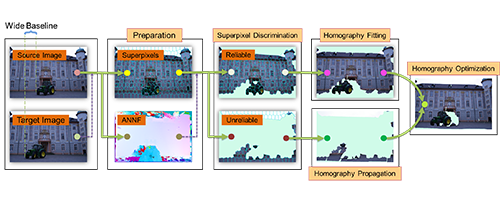

Zhensong Zhang
Ph.D. Student
Room 905, Ho Sin-Hang Engineering Building
Department of Computer Science and Engineering
The Chinese University of Hong Kong
Shatin, New Territories, Hong Kong
Email: zszhang[at]cse[dot]cuhk[dot]edu[dot]hk
[CV] [dblp] [Google Scholar]
Biography
I am a Ph.D. student in the Computer Science and Engineering Department, The Chinese University of Hong Kong, supervised by Prof. Hanqiu SUN. Before that, I received a BEng. degree and a M.S. degree from Xidian University and University of Chinese Academy of Sciences in 2011 and 2014, respectively. My research interest includes computer graphics and computer vision. Recently, I work on image and video editing, and computational videography.
Publications
Dynamic Video Stitching via Shakiness Removing |
Multi-video Object Synopsis Integrating Optimal View Switching |
|  | Homography Propagation and Optimization for
Wide-Baseline Street Image Interpolation |
Video Stitching for Handheld Inputs via Combined Video Stabilization |
A Novel Fast and Memory Efficient Parallel MLCS Algorithm for Long and Large-Scale Sequences Alignments |
 |
Color Correspondence of Image Warping using Plane Constraints |
Left and Right Hand Distinction for Multi-Touch Tabletop Interactions |
Multi-Objective Optimization Integration of Query Interfaces for the Deep Web based on Attribute Constraints |
Honors & Awards
Best TA award, awarded by department for excellent teaching assistantship, 2017.
Certificate of Merit, awarded by department for excellent teaching assistantship, 2015, 2016, 2017.
CUHK Postgraduate Studentship, 2014-2018.
ACM student travel grant for IUI 2014, Haifa, Israel, 2014.
National Scholarship, 2013.
National Scholarship of Encouragement, 2009.
Teaching Assistant
2017-2018 Fall CSCI5460 Virtual Reality
2016-2017 Spring CSCI3170 Introduction to Database Systems
2016-2017 Fall CSCI5460 Virtual Reality
2015-2016 Spring CSCI5460 Virtual Reality
2015-2016 Fall CSCI3310 Mobile Computing and Applications Development
2014-2015 Spring CSCI2100 Data Structures
2014-2015 Fall CSCI3310 Mobile Computing and Applications Development
Miscellanies
Paper Lists
Computer Graphics Papers, Computer Vision Papers, Computer Vision Foundation open access